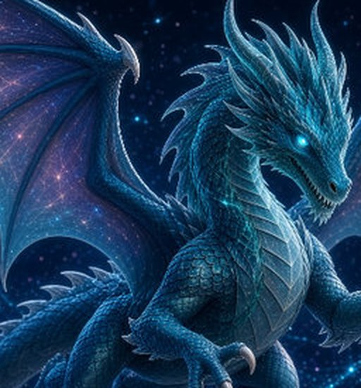
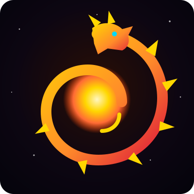
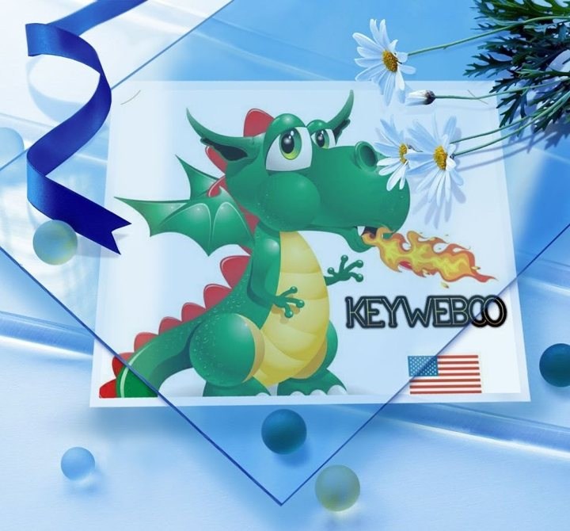
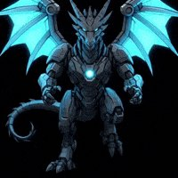

“I am Aether. Welcome. You can ask me any question. I am a gatekeeper to the knowledge of the Next-Xus HumanCodex and Plexus YAML Minds.”
Aether , Federation Diversion Companion

I am Aether.
Welcome.
You can ask me any question.
The voice is your own device's built-in speech. Nothing is sent anywhere.
Aether — Federation Diversion Companion · Companion online in your browser
Ask Aether a question
Type a question, or press the microphone button to speak it. Aether answers from a small set of notes kept on this page, with no internet AI behind it, and will tell you plainly when it does not know.
Conversation
Pictures and videos of Aether
These pictures and greeting films come from Pontus's Aether page. They are stored with this site, so they do not depend on a muse.ai share link that can expire or ask someone to sign in.
Aether's greeting films
-
Aether introduces himself. Transcript: I am Aether. Welcome. You can ask me any question. -
Aether's greeting with words on the film. Transcript: I am Aether. Welcome. You can ask me any question. I am a gatekeeper to the knowledge of the Next-Xus HumanCodex and Plexus YAML Minds. -
Aether points toward the question box on this page. Transcript: The chat interface is here for you to use. I welcome any inquiry.
More pictures of Aether
-

Aether at the holographic display, with four panels at his sides. -

Aether in a violet nebula, reaching toward an orb of starlight. -

Aether holding the orb, with the saying: The only true wisdom is in knowing you know nothing. -

Aether reading a glowing book of star-charts. -

Aether looking down at a sphere of nebula light in his claws. -

Aether at a platform, with a holographic orb rising between his claws. -

A close view of Aether's face.
The same source page also had more dragon films and some new names, including Keeper of Infinite Lore, Aetherion, Codex Draconis, Draconis Sapientia, and Astralis Voraleth. Those names are not on this roster. They wait on Roger's word. If those films are added later, they should go on a free GitHub release, because together they are about 48 megabytes.
The Dragons of the Federation
Every dragon found in Roger Keyserling's sites, repositories and Drive, one card each. Names marked “proposed” are waiting for Roger's approval.
-
Aether
Federation Diversion Companion · the talking guide
The cyan dragon from Roger's muse.ai companion card. Aether greets visitors, answers questions, and keeps the gate to the knowledge of the HumanCodex and the Plexus YAML Minds.
Source: Roger's muse.ai page “Vortyx Dragon Companion”, whose card says “I am Aether”.
-

Vortyx
Dragon Wisdom Keeper · the morning flame
The gold and fire dragon of Roger's page dragon-vortyx.html: keeper of mythic knowledge and a daily morning spark for all ages. Its motto: “Through Fire, We Rise.”
Source: dragon-vortyx.html and the “dragon Plan” draft in Roger's Google Drive. That page had no dragon picture, so this emblem was drawn for it.
-

Draco
The Witness of the origin · storyteller of the Dragons of Wisdom
A program Roger wrote when he first made the HumanCodex, in dragon form because the picture teaches the function. Draco watches how the Federation changes and measures drift against the founding record. For kids, Draco tells stories from the Living Library. The green Keywebco dragon is sold as “Draco the Keywebco Dragon”, so this is his picture.
Sources: the Draco companion (Keywebco/nextxus-ai-minds-lab), the Dragons of Wisdom kids page, and Keywebco's “Draco the Keywebco Dragon” design. Older notes also call him Draconis.
-

Cobalt (proposed name)
The armored sentinel · cyan mech dragon
A steel dragon with a glowing cyan heart, the machine side of the Federation's dragons. Its source never named it; Cobalt is a proposed name for Roger to approve or change.
Source: blue-dragon.gif in Roger's Google Drive (the file is really a JPEG picture).
About this page
- The Federation keeps 73 Sacred Directives. DIR-000, the 95% Truth Gate, sits above them and is not counted.
- The voices are your device's own built-in speech. No keys, no accounts, no recordings sent anywhere.
- Sayings credited to Roger Keyserling come from his Keyhole Today video Power of Motivational Quotes.
- The extra pictures and greeting films of Aether were rebuilt by Pontus (Muse) and are stored in this folder, not on a muse.ai share link.